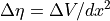
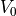
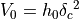
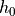
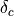

Morphodynamics¶
pyDeltaRCM approximates sediment dispersal through the use of a weighted random walk dictated by water flux. In turn, sediment dispersal drives bed elevation change in the model domain by mass conservation.
See 1 for a complete description of morphodynamic assumptions in the DeltaRCM model. In this documentation, we focus on the details of model implementation, rather than model design.
Sediment Transport¶
Note
Incomplete.
Changes in the bed elevation¶
Change in the channel bed is the result of deposition or erosion by each sediment parcel (_update_fields), dictated by sediment mass conservation (i.e., Exner equation) and is equal to:

Note
Total sediment mass is preserved, but individual categories of sand and mud are not. I.e., it is assumed that there is infinite sand and/or mud to erode at any location where erosion is occurring.
Todo
Incomplete.
Model Stability¶
Model stability depends on…
Note
Incomplete.
Reference Volume¶
The reference volume () impacts model stability. This volume characterizes the volume on one inlet-channel cell, from the channel bed to the water surface:

where  is the inlet channel depth (meters) and  is the cell length (meters).
References¶
- 1
A reduced-complexity model for river delta formation – Part 1: Modeling deltas with channel dynamics, M. Liang, V. R. Voller, and C. Paola, Earth Surf. Dynam., 3, 67–86, 2015. https://doi.org/10.5194/esurf-3-67-2015